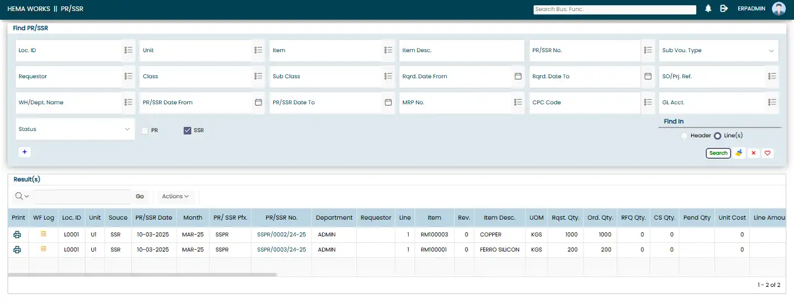
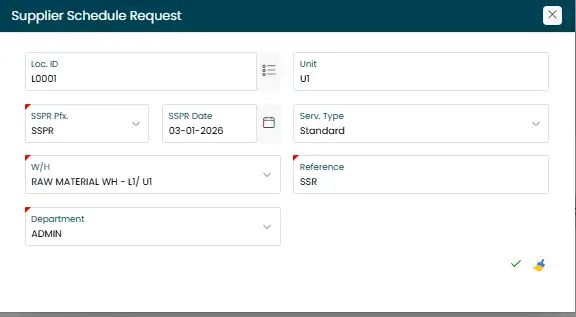
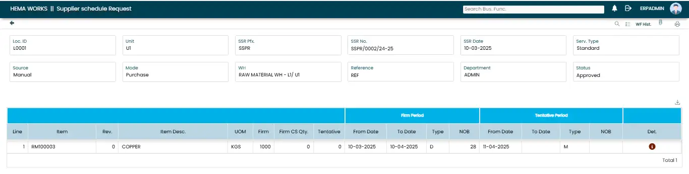

<div data-category="Purchase Order" data-title="Supplier Schedule Request" data-updated="December 01, 2025" data-contributors="RoadmapIT" data-breadcrumb="Home,Purchase Order,Supplier Schedule Request">
  <div class="page-content">
    <p>The Supplier Schedule Request feature allows Business Units to request specific delivery schedules from suppliers. This functionality helps in aligning procurement with production or project timelines by specifying required delivery dates for goods or services.</p>

    <h5>Navigation path:</h5>
    <p class="fs-6">Supply Chain \ Purchasing \ Transaction \ Supplier Schedule Request</p>

    

    <ul style="list-style-type: none; align-content: center">
      <li class="mouse-icon">Search screen displays the list of supplier schedule requests with the relevant details and its status.</li>
      <li class="mouse-icon">Click on search button to filter all the records.</li>
      <li class="mouse-icon">User can filter the respective documents by entering the search parameters at the header.</li>
      <li class="mouse-icon">Using search button, system displays the results relevant to the search parameters entered.</li>
      <li class="mouse-icon">On clicking; the corresponding transaction record will be displayed.</li>
      <li class="mouse-icon">Using <i class="bi bi-eraser text-secondary"></i> icon, entered search parameters can be cleared.</li>
      <li class="mouse-icon">To close the screen, use <i class="bi bi-x-lg text-danger"></i> icon.</li>
      <li class="mouse-icon">
        By Clicking the
        <i class="bi bi-plus fs-4 mx-2 text-primary"></i>
        Add button we can create new supplier schedule request by entering all the mandatory fields displayed in the Add dialog.
      </li>
    </ul>

    

    <ul style="list-style-type: none; align-content: center">
      <li class="mouse-icon">Choose the location and Unit field is auto updated.</li>
      <li class="mouse-icon">Choose the Doc Prefix and service type.</li>
      <li class="mouse-icon">Choose the Warehouse and Department name in LOV.</li>
      <li class="mouse-icon">Enter the Reference.</li>
      <li class="mouse-icon">
        To click
        <i class="bi bi-check-lg fs-4 mx-1 text-success"></i>
        button Document to create the supplier schedule request and navigated to the Transaction screen.
      </li>
    </ul>

    

    <ul style="list-style-type: none; align-content: center">
      <li class="mouse-icon">Choose the Item in Item LOV.</li>
      <li class="mouse-icon">Give the Firm and Tentative Qty.</li>
      <li class="mouse-icon">Choose the bucket type of Day/week/Month.</li>
      <li class="mouse-icon">Give the Firm period or Tentative period.</li>
      <li class="mouse-icon">The Document will be sent for approval using the Post button.</li>
      <li class="mouse-icon">Using Cancel button, the document can be cancelled.</li>
      <li class="mouse-icon">To approve the document, Navigate to the Workflow approvals screen.</li>
      <li class="mouse-icon">
        Click view details
        <i class="bi bi-info-circle text-primary"></i>
        For specific document.
      </li>
      <li class="mouse-icon">Screen navigate into query screen to check the details.</li>
      <li class="mouse-icon">After click the close button document navigate into Approval screen.</li>
      <li class="mouse-icon">Choose the Approval/forward/Return button field and click Process button, required process performed.</li>
    </ul>
  </div>
</div>